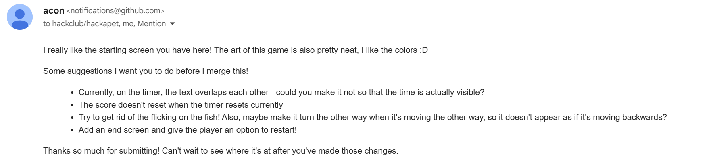

Meet Almanzo the Anglerfish - Aim: eat the fish to keep the light on —> reach the kingdom of fish by - If the anglerfish can’t keep the light on, they float back to the surface of the bathtub Storyline: Almanzo was kidnapped by Japanese fishers and is now trying to escape through a magical bathtub. Reclaiming power in the sea kingdom of Lophiidae, Almanzo wants to takeover. Through the means of luring fish through it’s esca, Almanzo has to eat fish to survive. If Almanzo doesn’t reach the sea kingdom, he will travel back to the bathtub in the human world, possibly eaten by humans! Can you help this desperate fish? Press the down key to begin Almanzo the Anglerfish was apart of the You Ship We ship limited time event at Hack Club - Hackapet. Hackapet was an event where you shipped a Tagamotchi like game, and then receive the hardware-PCB for it.
I have never done pixel art, nor made a game in python. Overall, I am pretty proud of myself. It doesn't look very pretty, nor any good, however the experience has taught me a lot.
Almanzo the Anglerfish is one of my few projects that I have made by myself (kind of). I have started many projects, but never completed them which may be connected to my commitment issues. The skills taught in digital technology really helped to design the game, but also face challenges.
I started off with a rough design and went from there. I gained feedback, inspiration and motivation from my friends. I then created pixel art for the first time.
Programming the game was the easiest part, the most difficult section of the project was importing the modules/extension - such as pygame and circuit python. I spent two weeks trying to find why the modules weren’t uploading. I then gained the courage to ask in the discussion channel for some help. I was met with compassion, understanding and support. After talking with many teenagers alike, I finally was able to get the sample code (running the sample code is used to see if all the required imports are there) to work!
In a week I completed the code for the game and submitted the project.
Throughout the experience, I gained feedback from my peers asking what they thought about the accessibility, appearance, function and satisfaction of the game. **Talk about Selita and Katie giving feedback.** I continued to send images, videos and voice recordings of the process. By talking about my thought process, I was able to effectively construct the game.

After submitting the game, I received feedback the YSWS’s co-creators, Acon. Acon is a 19 year old apart of hack club that creates events (hackathons, YSWS, coding jams etc) and shares all things tech to other teenagers. Before I could receive a PCB, I had to correct my work.
Initially, the accessibility of my work was quite low as the viewer wasnt able to see the exact amount of points they had as the time function was overlapping and creating millions of text displays!
After some tinkering, I corrected those mistakes and now I am waiting for my hardware.
After receiving the hardware, I want to create a 3D printed shell case. The experience taught me that coding isn’t something you do entirely by yourself, but with others. Sometimes asking for help is the best way to grow, even when you think your question is stupid, there is someone who is thinking the same thing as you.